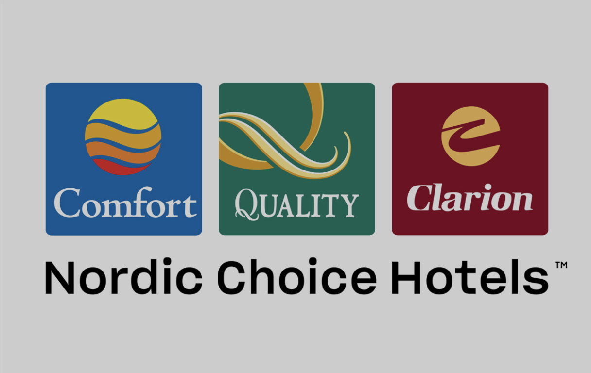

Cyberattack mot hotellkejdan Nordic Choice

Det är en helt vanlig dag i december på Nordic Choice Hotels i Stockholm. En anställd går igenom sin mejlkorg och öppnar ett mejl.
I konversationen fanns en bilaga som den anställde ombads att ladda ned, vilket den anställde gjorde.
På några sekunder hade kedjan blivit hackad, bilagan innehöll ransomware. Attacken kom genom en så kallad supply chain-attack via ett mejl. Supply Chain-Attack är ett avancerat sätt, man attackerar först en leverantör (supplier) till företaget för att genom dem attackera sin måltavla. Detta gör att det är svårt att misstro mejlet speciellt eftersom det finns i en befintlig konversation.
Brottslingarna lämnade en digital lapp där de förklarade vad som hade hänt och krävde en lösensumma på 44 miljoner NOK.
Deras bokningssystem låg nu nere, hissar och rumskort fungerade inte längre. Teamet på Nordic Choice kallades under kvällen till ett krismöte.
Hotellkedjans säkerhetsteam inrättade ett krisinsatsteam, som fick komma med en lösning för att få systemen online igen, så att personalen kunde komma åt sitt system. Iver, som stått för driften av hotellkedjans kärnapplikationer under många år kopplades in.
En tid innan attacken, så hade hotellkedjan beslutat om en migrering från Windows-systemet till Google Chrome OS för sin interna verksamhet. I och med händelsen bestämde de sig för att snabba på processen som ett sätt att återställa sina system. Inom 24 timmar efter attacken lyckades de göra den första migreringen på en dator, vilket gjorde att ett hotell kunde hantera bokningar och incheckningar igen. Teamet lyckades migrera 2000 datorer på 212 hotell i fem olika länder på 48 timmar.
Nordic Choice Hotels hade inga planer på att betala lösensumma och deras policy var att inte kommunicera med brottslingarna. Detta gjorde cyber-brottslingarna ivrigare och nu började de lägga ut känslig information om de anställda på Dark Web. De började stegvis och publicerade 10% av den stulna informationen. Det var information som anställningsavtal och lönespecifikationer i syfte att hota.
Genom att byta system till Chrome OS kunde de återfå de flesta av sina system igen.
Kari Anna Fiskvik, vice vd för teknik på Nordic Choice Hotels, berättar i en intervju med The Wall Street Journal att hon i efterhand ser dem som ett bra offer, då de redan efter att hotellen precis hade blomstrat efter pandemi relaterade nedstägningar. Kari säger också att mer än fem veckor efter att hackare slog till fortsätter problem i maskiner som tillhandahåller värme, musik och andra tjänster.
Såhär i efterhand finns personnummer, bankkonton, lönebesked och scheman för Nordic Choice Hotels anställda ute på nätet. Anställningsavtal och bonusvillkor för chefer inom koncernen likaså. Det skadar de enskilda anställda som blivit drabbade eftersom risken för identitetsstöld bland annat ökar.
I sin helhet har Nordic Choice Hotels, enligt mig, hanterat den här situationen mycket proffsigt. Genom att de med en transparens visat upp vad som hänt och hur de gått tillväga, hjälper de andra företag att förhindra att en sån här attack händer. Nordic Choice har också talat om hur betryggande det var under tiden att ha Iver bakom sig, då de själva inte hade vetskap över hur de skulle gå tillväga. Genom Iver kunde Nordic Choice fokusera på att lösa situationen på plats.
IVER:
Iver är en ledande nordisk leverantör av molnbaserade IT-tjänster.
Iver har en bred kundbas med 20 kontor i Sverige. Förutom Nordic Choice Hotels har de samarbete med IVO - Inspektionen för vård och omsorg, Dina försäkringar, Blomsterlandet, Nelly och den offentliga sektorn för kommunerna Solna, Sollentuna och Katrineholm men dessa är bara några av många samarbeten.
Sommaren 2021 utsattes matkedjan Coop för en ransomewere-attack som resulterade i att deras kassasystem blev oandvädbara och där hackarna krävde 600 miljoner kronor för att återställa deras filer. Attacken var inte riktad mot Coop, utan mot ett Amerikanskt företag vid namn Kaseya som är ett IT-företag. Coops leverantör Visma Esscom använder sig av Kaseyas mjukvara. Den här händelsen tillsammans med attacken mot Nordic Choice är en kupp av attacker som skedde 2021.